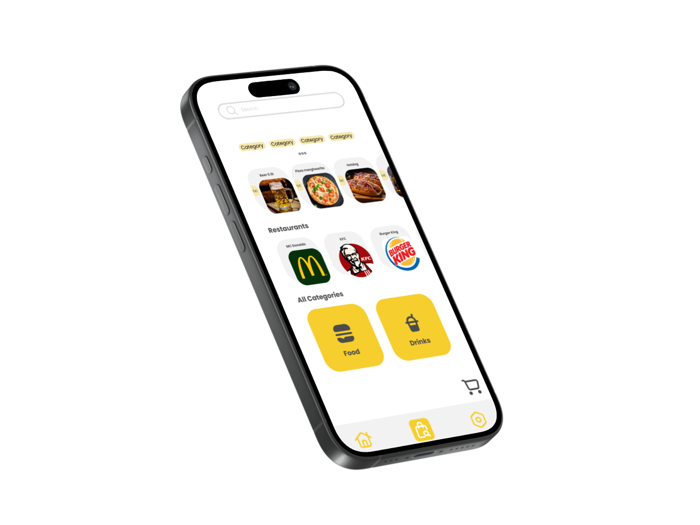
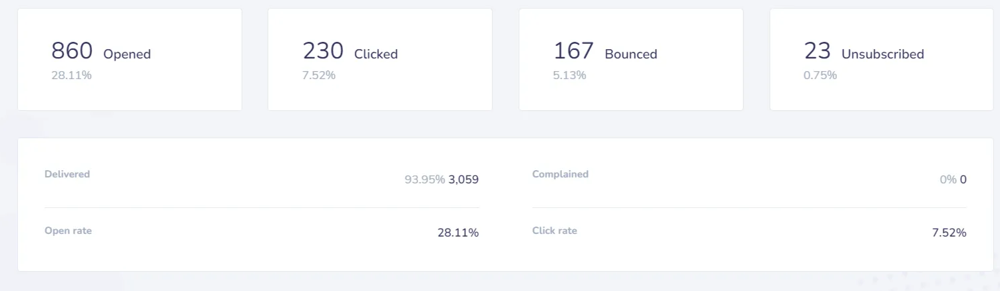
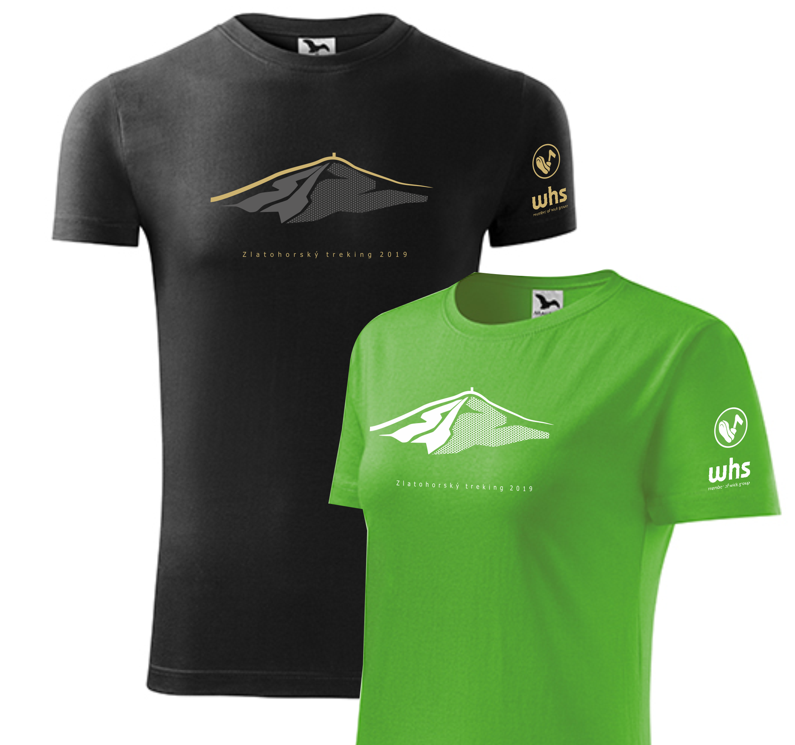

Timi – time tracking app
A timesheet & task app I designed and built with AI to replace a paper notebook. Workers log their hours in 2–3 taps from a phone, and leads approve them in one click. Now in daily use.
a UX designer who likes to build things. I enjoy figuring out how something actually works, designing a simple solution, and bringing it to life with the help of AI.
UX Research & Design (Ing., VŠE), a year as a low-code frontend developer on banking apps, and a small AI-built app that's in everyday use. Take a look at what I do and get in touch.
A few projects I've designed, built, and learned from.
A timesheet & task app I designed and built with AI to replace a paper notebook. Workers log their hours in 2–3 taps from a phone, and leads approve them in one click. Now in daily use.
My thesis explores interactive animations that go beyond standard HTML elements and conventional UI components. They can convey complex information more clearly while improving ergonomics, visual rhetoric and aesthetics.

A mobile app for ordering food and drinks at sports stadiums, designed in a team for our User Interface Design course. The goal: let spectators stay in their seats instead of waiting in long lines.
I never formally studied software development, but I became interested in the web while I was still studying. At the time, WordPress was one of the most popular tools for building websites with an admin interface, and I used it to create my first demo projects.
Over time, I started learning JavaScript on my own. Later, at university, I took and completed a Node.js course, which gave me a chance to explore backend JavaScript. My main area of study was UX, which naturally went hand in hand with prototyping and web development.
Since then, I've started building my own apps. The biggest one so far is Timi, built without writing a single line of code manually. I took care of the design, the rules and how the data fits together; AI wrote the code. What I enjoy most is how far one person can now get — a bit of design, a bit of analysis, and AI to help turn it into something that works.
Still, I find development incredibly satisfying — especially when something finally starts working and an idea turns into something tangible. Here are a few smaller experiments:
My first vibe-coding experiment: a QR code generator and scanner built with AI in Antigravity, without writing a single line of code myself. It still needs some polish, but it works.
A school project born from my trouble falling asleep: a noise generator with a sleep timer. The main challenges were generating audio with the Web Audio API and building a custom interactive timer.
ZH Treking is a traditional hiking event in Zlaté Hory, which over the years has grown into an event attended by over 1,000 people. Since my dad has been one of the main organizers for decades, I naturally got involved too — and it's become a bit of a passion project for me.
I help with sending out email invitations, creating posts for social media, and occasionally designing visuals. One year, I even created the t-shirt design for the event.
Through this experience, I've learned the basics of communication, content planning, and visual consistency. I was also surprised to find out how complex organizing an event of this size can be — it gave me a whole new appreciation for behind-the-scenes work.

